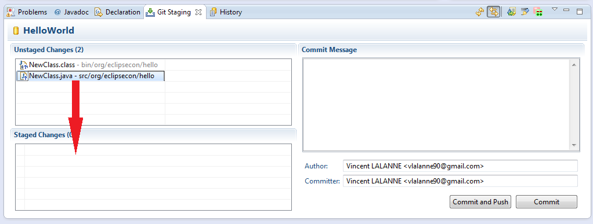

A First Commit
- Create a new file Java files
- Add .java file to the staged changes (drag&drop it in the
Git Staging View)
 - Ignore the .class file
file.class > Ignore
Note
you can create a .gitignore file in the project root and add the line/binto ignore all binary files - Enter a commit message
- Press 'Commit'